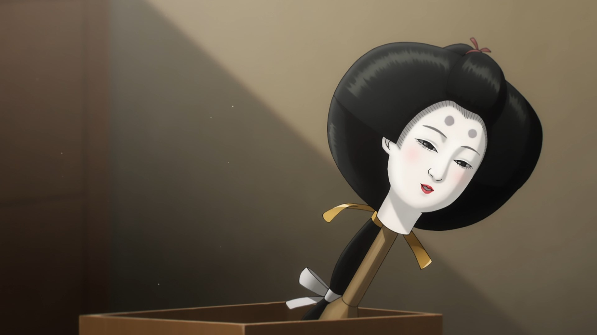
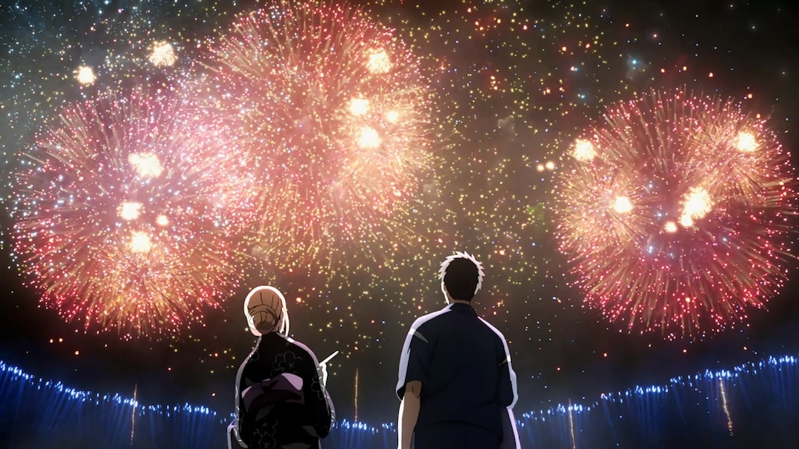

Sono Bisque Doll wa Koi wo Suru
My Dress-Up Darling is a manga series written and illustrated by Shinichi Fukuda. Published in Square Enix 's Young Gangan magazine since January 2018, it has been published in nine tankōbon volumes as of March 2022 . An anime series from CloverWorks premieredin January 2022.
Wakana Gojō is a first year high school student who dreams of becoming a hina puppet master . One day during the first semester, his popular classmate Marin Kitagawa sees him sewing doll costumes in home economics class. Marin wants to get into cosplay and has already sewed a costume for her favorite video game character, but she sews badly herself and ends up asking Wakana, who is better at it, to redesign the costume. Even though Wakana had never made a full size suit before, he was inspired by Marin's tenacity and agreed.

